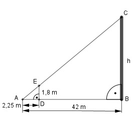

Aufgabe 50 Ein Turm wirft einen Schatten von 42 m, eine davorstehende 1,8 m große Person einen von 2,25 m. a1) Wie hoch ist der Turm? a2) Wie lang ist der Schatten eines 17 m hohen Baumes neben dem Schornstein? a3) Wie hoch wäre der Schornstein, wenn der Schatten der Person 15 cm länger wäre? a1)  Die Dreiecke ABC und ADE sind ähnlich, weil sie in 2 Winkeln übereinstimmen. 42 m Ähnlichkeitsfaktor k = --------- 2,25 m h k = ------ |*1,8 1,8 42 k * 1,8 = h = ------ * 1,8 m = 33,6 m 2,25 oder Strahlensatz: h 1,8 ---- = ------- |*42 42 2,25 1,8 h = ------ * 42 m = 33,6 m 2,25 oder h : 42 = 1,8 : 2,25 Inneres Produkt = äußeres Produkt 42 * 1,8 = x * 2,25 |:2,25 h = 33,6 m a2) 17 k = ------- 33,6 l k = ---- |*42 42 17 l = k * 42 = ------- * 42 m = 21,25 m 33,6 oder Strahlensatz 42 l ------- = ----- 33,6 17 Über Kreuz multipliziert: 42 * 17 = l * 33,6 | :33,6 42 * 17 l = ---------- = 21,25 m 33,6 oder 42 : 33,6 = l : 17 Inneres Produkt = äußeres Produkt l * 33,6 = 42 * 17 |:33,6 l = 21,25 m a3) 42 m Ähnlichkeitsfaktor k = --------- 2,4 m h' k = ------ |*1,8 1, 8 42 k * 1,8 = h' = ----- * 1,8 m = 31,5 m 2,4 oder Strahlensatz: h' 1,8 ---- = ------ |*42 42 2,4 1,8 h' = ------ * 42 m = 31,5 m 2,4 oder h' : 42 = 1,8 : 2,4 Inneres Produkt = äußeres Produkt 42 * 1,8 = h' * 2,4 |:2,4 h' = 31,5 m